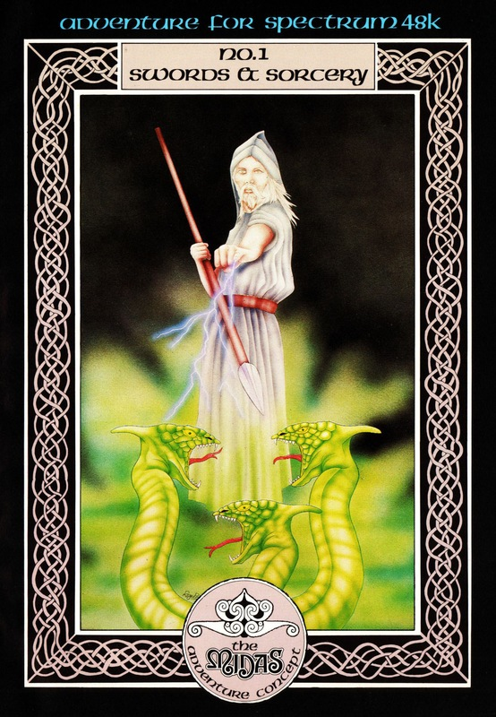
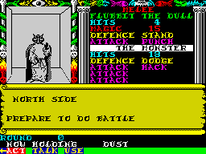

Swords and Sorcery


{kind=link}

| Publisher: | PSS |
| Price: | £9.95 |
| Year: | 1985 |
| Source: | CRASH, Issue 24 |

Some games are big because of large budgets, others because of large and prominent advertising. And some games are big because they attempt something new, and advance the limits of programming just that bit further. Swords and Sorcery is one of the games which has earned a reputation solely on the length of time and concerted effort expended on its completion. As with all ambitious programming efforts the date of completion was put back time and time again — but it hasn’t surfaced at such a bad time, being in sight of Christmas and those long winter evenings.
Recently, complicated games haven’t been given the reception which was their due in the early days of home computing. I think the reasons behind this are twofold. The first reason is the way in which the home computer games market is becoming both broader and shallower as if the bubbling cauldron of energy and ideas that was this industry had run its course and now lines up with all the other consumables, stuck in the mud of a silted up estuary. Reason two is the average age of games players which has fallen right down through the teens to the point where anything greater than keeping a fire button depressed for five minutes is thought educationally over-demanding. Now you might think, wouldn’t all this be better placed in an editorial (and indeed, since I haven’t written this month’s, these very words could reappear there yet) and not in a review. Well, if this game does not recoup in chart success all the man hours put into it this paragraph may seem just that bit more interesting.

It would seem every major new project requires a buzz word, as if the computer games industry were out to create a subculture language all of its own. In this case S & S presents us with MIDAS where, for the very first time, the computer plays the part of your eyes much as the camera plays the part of that geezer’s eyes when he crashes that medics party in St. Elmo’s Fire. You know the bit, he’s dripping wet and she turns round and she ends up telling him how she just puts out the rubbish and things like everyone else. (I hope the Ed doesn’t delete this stuff — this is very inventive writing). On the left side of the screen your view of the catacombs is smoothly animated and does indeed give the impression of a cartoon film. As you approach a chest or a bottle you seem to bounce up and down — just as you do when walking on a street — and you can even jump: the room and objects before you fall and rise again as you land on your feet.
The other characters and creatures you meet in the dungeon are also smoothly animated as they wander the corridors. There are treasure rooms to plunder, caverns to explore and pits to avoid. Failing to successfully negotiate a pit results in the walls of the pit whizzing past you as you plummet to an early exit. The goal that transcends all others is the search for the four parts of the priceless Armour of a Master Armourer who fashioned the masterpiece in distant antiquity.
On the right side of the screen is either displayed an aerial view of the quadrant you are in or a rather intimidatingly complicated set of labels and figures which flash up once combat has begun. At the bottom of the screen is a revolving sequence of options. Keys 0 and 8 revolve the options while key 9 chooses that option at the far left end of this strip. Flashing arrows indicate where movement is possible and I’ll doubt whether a single person could play this game and not come away with the impression that this arrangement is both awkward and clumsily designed. The truth is it doesn’t quite work.
In battle, momentary panic can set in followed quickly by frustration as the player struggles to get the right set of options flowing one after the other. But even when in a comparatively calm situation the clumsiness of this system is all too apparent. Take this attempt to get an object from a chest where OPEN CHEST, GET SANDWICH, EAT SANDWICH would suffice in, say, The Hobbit. EXIT, ACT, SMASH, CHEST, HANDLE, TAKE OUT, CHEST, SANDWICH, HANDLE, ACT, EAT does the job in S & S here, which is not only longer but, remember, involves all that revolving option palaver at the bottom of the screen.
Loading up the game you are presented with three options: Default Game which sees you take on the role of Flubbit the Dull, a ready-made character with an uninspiring name, Load Game which restores a previously saved character, and New Character where you select a name and training scheme for your character. This training scheme allows you 14 days to train with 12 masters and gives your character the opportunity to improve its sword skills, or perhaps its thievish abilities, eg picking locks. Forty dragons teeth is your budget for armoury.
As with all complex subjects S & S has an authoritative and full account of the world you will enter. To summarise all that is said therein would be a difficult task indeed. Perhaps a good way of showing what to expect is to give three examples (which will probably remind many of D&D guide books):
SPELL — FIREBOLT: a small blast of magical fire which will burn some of your foes. It does about the same as a hefty sword blow (from an inexperienced swordsman), range — line of sight.
SPELL — UN-POISON: this spell will neutralise any poisonous substance imbibed, ingested or injected into the user, preventing it from doing any more damage (poison damage is spread over a period of time), range — normal.
MONSTER — MAGES: there are two sorts of mages, the lesser and greater varieties. They are visually identical and the greater is recognised by the fact that he uses more powerful spells. Mages disdain hand-to-hand combat and will always attempt to keep their distance and cast spells. Due to the fact that they do not wear armour or carry much equipment they also move quite quickly.
You will notice the period of time aspect to poison noted in the UN-POISON spell and this is a very sophisticated concept in this game. For this reason a close eye should be kept on your character’s strength and spell power whilst handling mysterious objects. Some items you pick up will instil within you tremendous powers and the ability to deal with all but the deadliest of foes. On the darker side some artefacts will parasitize your strength and negate your efforts, draining the very blood from your hapless character.
Swords and Sorcery is a super attempt to bring the sheer depth of D&D to the computer screen. Rare for this type of game are the impressive graphics and brilliant animation showing in the best way possible the excitement of exploring monster-filled dungeons. Considering the amount of time spent programming it, and the high quality of the graphics, it is hard to imagine many who wouldn’t be prepared to invest the time in getting to know how to play the game in order to delve deeper, cultivate their character and reap the rich rewards.
COMMENTS
| Difficulty: | Playing is hard to begin with |
| Graphics: | Very good |
| Presentation: | Super |
| Input facility: | Revolving options from larger menu |
| General rating: | Ambitious and outstanding addition to the games playing world |
| Atmosphere: | 8 |
| Vocabulary: | 9 |
| Logic: | 8 |
| Addictive quality: | 9 |
| Overall: | 9 |